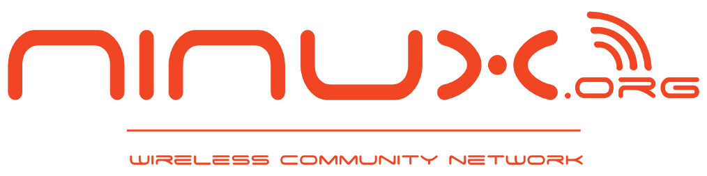
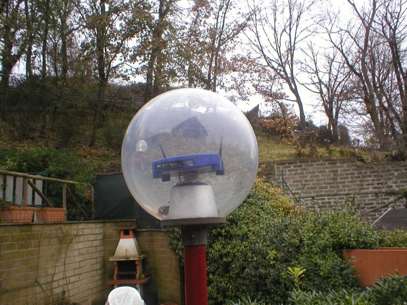
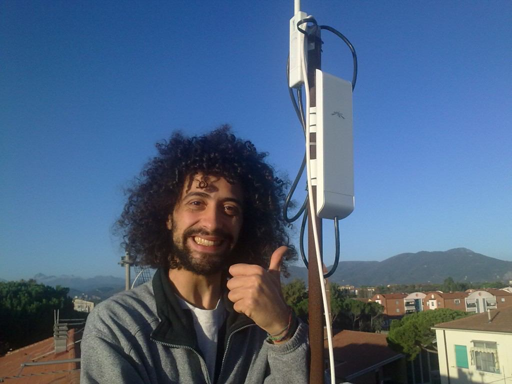

Ninux Verona
La community wireless di Verona
Realizzato da Ilario Gelmetti / ilario@eigenlab.org / Chimico e linuxaro.
In collaborazione con Collettivo Studiare con Lentezza
Presso Circolo Pink - 25 febbraio 2014
Cos'è Internet?
inter-net = reti (fisiche) interconnesse
Ciascuna rete si gestisce in modo autonomo
Ai dittatori internet non piace
«Oggi esiste una minaccia che si chiama Twitter»
«I social media sono la peggior minaccia alla società»
«Un tweet e’ piu’ pericoloso di un’auto imbottita di bombe»
- Filtraggio dei siti scomodi
- Registrazione di chi accede a questi siti
- Spionaggio diretto delle comunicazioni
- Furto delle credenziali e lettura delle comunicazioni
Per contrastare la censura: il P2P
Software che utilizzano l'approccio peer to peer sono stati la prima risposta alla censura.
Perché questo è possibile?
1) Perché internet ha una struttura gerarchica,
basta controllare pochi punti per controllarlo tutto.
Perché questo è possibile?
2) Perché l'infrastruttura fisica di internet non è nostra.
Rete bene comune = per tutti = di tutti
Invece
- non è per tutti: digital divide, costi...
- non è di tutti: un bene troppo prezioso perchè sia sotto il controllo di pochi
L'alternativa: costruire dal basso una rete non gerarchica
Community network: rete di telecomunicazione costruita e gestita da una o più comunità di persone.
Ciascun nodo della rete è di proprietà di una persona diversa
La gestione è distribuita tra i partecipanti in modo paritario
Chi può partecipare?
Chiunque!! Più la rete è composta da gruppi differenti più è decentralizzata e meno è possibile dominarla!
Le antenne
Antenne autocostruite

Le antenne
Antenne comprate router autocostruiti

Le antenne
Antenne comprate router autocostruiti

Le antenne
Antenne comprate router autocostruiti

Le antenne
Antenne comprate router autocostruiti

Le antenne
Router wireless da interni
Le antenne
Router wireless da esterni
Ed è legale?
Chi ha iniziato nel 2002 era nella completa illegalità.
Ora è legale fare telecomunicazioni sulle frequenze libere ovunque
È legale anche condividere l'ADSL con la community ma
- ci si prende la responsabilità del traffico (i romani non hanno mai avuto problemi in questo senso)
- il vostro provider potrebbe vietarlo
Più informazioni su http://wiki.ninux.org/LeggiWireless
E fa male?
In breve:- emette un decimo della potenza di un cellulare
- non sta in tasca come il cellulare, sta sul tetto di casa, dunque la distanza e la soletta abbattono le onde
Se non vi fate problemi ad avere un cellulare, non fatevi problemi ad avere una antenna di Ninux.
Internet ha cambiato la nostra vita
in modo definitivo.
Un bene così importante deve essere comune,
libero e facilmente accessibile.
Il modello proposto in questo documento è alla nostra portata.
Dobbiamo impegnarci ancora molto per realizzarlo.
Ma abbiamo tanti esempi di piccoli/grandi successi:
NinuxRoma, Guifi.net in Catalonia (Spagna), AWMN in Grecia, Freifunk a Berlino e molte altre...
Più informazioni su ninux.org, su wiki.eigenlab.org e verona.ninux.org.
Abbiamo una mailing list per NinuxVerona su ml.ninux.org.